공유압기능사 (2012-10-20 기출문제)
1과목: 임의구분
1. 액추에이터 중 유압 에너지를 직선 운동으로 변환하는 기기는?
- 유압 모터
- 유압 실린더
- 유압 펌프
- 요동 모터
(정답률: 87%)

2. 유압 및 공기압 용어의 정의에 대하여 규정한 한국산업표준으로 맞는 것은?
- KS B 0112
- KS B 0114
- KS B 0119
- KS B 0120
(정답률: 63%)
3. 전기 리드 스위치를 설명한 것으로 틀린 것은?
- 자기현상을 이용한 것이다.
- 영구자석으로 작동한다.
- 불활성 가스 속에 접점을 내장한 유리관의 구조이다.
- 전극의 정전용량의 변화를 이용하여 검출한다.
(정답률: 44%)
4. 액추에이터의 공급 쪽 관로에 설정된 바이패스 관로의 흐름을 제어함으로써 속도를 제어하는 회로는?
- 미터 인 회로
- 미터 아웃 회로
- 블리드 온 회로
- 블리드 오프 회로
(정답률: 53%)
5. 공압의 특징을 나타낸 것이다. 옳지 않은 것은?
- 위치 제어가 용이하다.
- 에너지 축적이 용이하다.
- 과부하가 되어도 안전하다.
- 배기소음이 발생한다.
(정답률: 62%)
6. 압축공기의 조정 유닛(Unit)의 구성기구가 아닌 것은?
- 압축공기 필터
- 압축공기 조절기
- 압축공기 윤활기
- 소음기
(정답률: 85%)
7. 양 제어밸브, 양 체크밸브라고도 말하며 압축공기 입구(X, Y)가 2개소, 출구(A)가 1개소로 되어 있으며, 서로 다른 위치에 있는 신호를 분류하고 제 2의 신호 밸브로 공기가 누출되는 것을 방지하므로 OR요소라도 하는 밸브는 어느 것인가?
- 셔틀밸브
- 체크밸브
- 언로드 밸브
- 리듀싱 밸브
(정답률: 77%)
8. 공압 시스템의 사이징 설계조건으로 볼 수 없는 것은?
- 부하의 중량
- 반복 횟수
- 실린더의 행정거리
- 부하의 형상
(정답률: 68%)
9. 사용온도가 비교적 넓기 때문에 화재의 위험성이 높은 유압장치의 작동유에 적합한 것은?
- 식물성 작동유
- 동물성 작동유
- 난연성 작동유
- 광유계 작동유
(정답률: 81%)
10. 공유압 제어밸브를 기능에 따라 분류하였을 때 해당되지 않는 것은?
- 방향 제어 밸브
- 압력 제어 밸브
- 유량 제어 밸브
- 온도 제어 밸브
(정답률: 85%)
11. 펌프가 포함된 유압유니트에서 펌프 출구의 압력이 상승하지 않는다. 그 원인으로 적당하지 않은 것은?
- 릴리프 밸브의 고장
- 속도제어밸브의 고장
- 부하가 걸리지 않음
- 언로드 밸브의 고장
(정답률: 59%)
12. 다음 그림의 기호는 무엇을 뜻하는가?
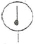
- 압력계
- 온도계
- 유량계
- 소음기
(정답률: 80%)
13. 공기압 회로에서 실린더나 액추에이터로 공급하는 공기의 흐름방향을 변환하는 기능을 갖춘 밸브는 어느것인가?
- 방향 전환 밸브
- 유량제어 밸브
- 압력제어 밸브
- 속도제어 밸브
(정답률: 86%)
14. 공기 건조기에 대한 설명 중 옳은 것은?
- 수분 제거 방식에 따라 건조식, 흡착식으로 분류한다.
- 흡착식은 실리카겔 등의 고체 흡착제를 사용한다.
- 흡착식은 최대 -170℃까지의 저노점을 얻을 수 있다.
- 건조제 재생 방법을 논 브리드식이라 부른다.
(정답률: 74%)
15. 다음 중 압력제어 밸브의 특성이 아닌 것은?
- 크래킹특성
- 압력조정 특성
- 유량특성
- 히스테리시스특성
(정답률: 48%)
16. 구조가 간단하고 운전 시 부하변동 및 성능변화가 적을 뿐 아니라 유지보수가 쉽고 내접형과 외접형이 사용되는 펌프는?
- 기어펌프
- 베인펌프
- 피스톤펌프
- 플런저펌프
(정답률: 59%)
17. 한 방향의 유동을 허용하나 역 방향의 유동은 완전히 저지하는 역할을 하는 밸브는?
- 체크 밸브
- 셔틀 밸브
- 이압 밸브(AND 밸브)
- 유량제어 밸브
(정답률: 76%)
18. 유압 펌프가 기름을 토출하지 않을 때 흡입쪽의 점검이 필요한 기기는?
- 실린더
- 스트레이너
- 어큐뮬레이터
- 릴리프 밸브
(정답률: 59%)
19. 공압 장치에 부착된 압력계의 눈금이 5kgf/cm2를 지시한다. 이 압력을 무엇이라 하는가?(단, 대기압력을 0으로 하여 측정하였다.)
- 대기 압력
- 절대 압력
- 진공 압력
- 게이지 압력
(정답률: 69%)
20. 유량제어 밸브에 속하는 것은?
- 전환 밸브
- 체크 밸브
- 정비 밸브
- 교축 밸브
(정답률: 61%)
2과목: 임의구분
21. 공압과 유압의 조합기기에 해당되는 것은?
- 에어 서비스 유닛
- 스틱 앤 슬립 유닛
- 하이드로릭 체크 유닛
- 벤투리 포지션 유닛
(정답률: 63%)
22. 공압 시스템에서 제어밸브가 할 수 없는 것은?
- 방향 제어
- 속도 제어
- 압축 제어
- 압력 제어
(정답률: 72%)
23. 공유압 제어밸브와 사용 목적이 틀린 것은?
- 감압밸브 : 어떤 부분 회로의 압력을 주회로의 압력보다 저압으로 할 때 사용된다.
- 2압 밸브 : 안전제어, 검사기능 등에 사용된다.
- 압력 스위치 : 압력신호를 높은 압력으로 만든다.
- 시퀀스 밸브 : 다수의 액추에이터에 작동순서를 결정한다.
(정답률: 61%)
24. 유압기기에서 스트레이너의 여과입도 중 많이 사용되고 있는 것은?
- 0.5~1㎛
- 1~30㎛
- 50~70㎛
- 100~150㎛
(정답률: 39%)
25. 유압장치의 구성요소 중 동력장치에 해당되는 요소는 어느 것인가?
- 펌프
- 압력제어 밸브
- 액추에이터
- 실린더
(정답률: 56%)
26. 시스템을 안전하고 확실하게 운전하기 위한 목적으로 사용하는 회로로 두 개의 회로 사이에 출력이 동시에 나오지 않게 하는데 사용되는 회로는?
- 인터록 회로
- 자기 유지 회로
- 정지 우선 회로
- 한시 동작 회로
(정답률: 82%)
27. 2개의 안정된 출력 상태를 가지고, 입력 유무에 관계없이 직전에 가해진 압력의 상태를 출력 상태로서 유지하는 회로는?
- 부스터 회로
- 카운터 회로
- 레지스터 회로
- 플립플롭 회로
(정답률: 82%)
28. 다음 그림의 회로도는 어떤 회로인가?
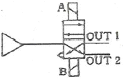
- 1방향 흐름회로
- 플립플롭 회로
- 푸시 버튼 회로
- 스트로크 회로
(정답률: 73%)
29. 공기압 장치에서 사용되는 압축기는 작동원리에 따라 분류하였을 때 맞는 것은?
- 터보형
- 밀도형
- 전기형
- 일반형
(정답률: 67%)
30. 로드리스(rodless) 실린더에 대한 설명으로 적당하지 않은 것은?
- 피스톤 로드가 없다.
- 비교적 행정이 짧다.
- 설치공간을 줄일 수 있다.
- 임의의 위치에 정지시킬 수 있다.
(정답률: 53%)
31. 도체의 전기저항은?
- 단면적에 비례하고 길이에 반비례한다.
- 단면적이 반비례하고 길이에 비례한다.
- 단면적과 길이에 반비례한다.
- 단면적과 길이에 비례한다.
(정답률: 66%)
32. 다음 그림과 같이 입력이 동시에 ON 되었을 때에만 출력이 ON되는 회로를 무슨 회로라고 하는가?
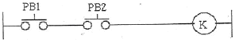
- OR회로
- AND회로
- NOR회로
- NAND회로
(정답률: 80%)
33. 권선형 유도 전동기의 속도 제어법 중 비례추이를 이용한 제어법으로 맞는 것은?
- 극수 변환법
- 전원 주파수 변환법
- 전압 제어법
- 2차 저항 제어법
(정답률: 45%)
34. 다음 중 검출용 스위치는?
- 푸시버튼 스위치
- 근접 스위치
- 토글 스위치
- 전환 스위치
(정답률: 55%)
35. 교류 회로의 역율을 구하는 공식으로 맞는 것은?
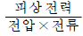
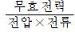
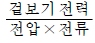
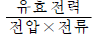
(정답률: 63%)
36. 3상 교류의 Δ결선에서 상 전압과 선간 전압의 크기관계를 표시한 것은?
- 상 전압 ＜ 선간 전압
- 상 전압 ＞ 선간 전압
- 상 전압 = 선간 전압
- 상 전압 ≠선간 전압
(정답률: 71%)
37.
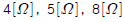
의 저항 3개를 병렬로 접속하고 50[V]의 전압을 가하면 5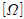
에 흐르는 전류는 몇 [A]인가?- 4[A]
- 5[A]
- 8[A]
- 10[A]
(정답률: 62%)
38. 사인파 전압의 순서값이
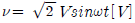
인교류의 실효값[V]은?- V/2
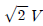
- V
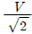
(정답률: 43%)
39. 백열전구를 스위치로 점등과 소등을 하는 것을 무슨 제어라고 하는가?
- 정성적 제어
- 되먹임 제어
- 정량적 제어
- 자동제어
(정답률: 74%)
40. 직류 전동기의 속도제어법이 아닌 것은?
- 계자 제어법
- 발전 제어법
- 저항 제어법
- 전압 제어법
(정답률: 58%)
3과목: 임의구분
41. 전류를 측정하는 기본 단위의 기호가 잘못된 것은?
- 킬로암페어 : [kA]
- 밀리암페어 : [mA]
- 마이크로암페어 :
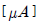
- 나노암페어 : [pA]
(정답률: 86%)
42. 3성 유도 전동기의 원리는?
- 브론델의 법칙
- 보일의 법칙
- 아라고 원판
- 자기저항 효과
(정답률: 55%)
43. 10[A]의 전류가 흘렀을 때의 전력이 100[W]인 저항에 20[A]의 전류가 흐르면 전력은 몇[W]인가?
- 50
- 100
- 200
- 400
(정답률: 34%)
44. 전압계 사용법 중 틀린 것은?
- 전압의 크기를 측정할 시 사용된다.
- 전압계는 회로의 두단자에 병렬로 연결한다.
- 교류 전압 측정 시에는 극성에 유의한다.
- 교류 전압을 측정할 시에는 교류 전압계를 사용한다.
(정답률: 62%)
45. 시퀀스 제어의 형태가 아닌 것은?
- 시한제어
- 순서제어
- 조건제어
- 되먹임제어
(정답률: 67%)
46. 단면임을 나타내기 위하여 단면부분의 주된 중심선에 대해 45° 정도로 경사지게 나타내는 선들을 의미하는 것은?
- 호핑
- 해칭
- 코킹
- 스머징
(정답률: 78%)
47. 그림과 같은 용접보조기호 설명으로 가장 적합한것은?
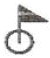
- 일주 공장 용접
- 공정 점 용접
- 일주 현장 용접
- 현장 점 용접
(정답률: 60%)
48. 기계제도에서 대상물의 일부를 떼어 낸 경계를 표시하는데 사용하는 선의 명칭은?
- 가상선
- 피치선
- 파단선
- 지시선
(정답률: 78%)
49. 그림과 같은 3각법으로 정투상한 정면도와 우측면도에 가장 적합한 평면도는?
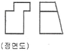
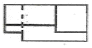
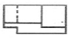
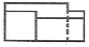
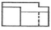
(정답률: 51%)
50. 그림의 치수선은 어떤 치수를 나타내는 것인가?
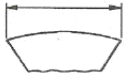
- 각도의 치수
- 현의 길이 치수
- 호의 길이 치수
- 반지름의 치수
(정답률: 65%)
51. 경사면부가 있는 대상물에서 그 경사면의 실형을 표시할 필요가 있는 경우 그 투상도로 가장 적합한 것은?
- 회전 투상도
- 부분 투상도
- 국부 투상도
- 보조 투상도
(정답률: 55%)
52. 리벳의 호칭 길이를 가장 올바르게 도시한 것은?
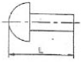
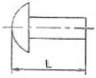
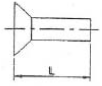
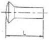
(정답률: 65%)
53. 볼트와 너트의 풀림방지, 핸들을 축에 고정할 때 등 큰 힘을 받지 않는 가벼운 부품을 설치하기 위한 결합용 기계요소로 사용되는 것은?
- 키
- 핀
- 코터
- 리벳
(정답률: 62%)
54. V 벨트에서 인장강도가 가장 작은 것은?
- M형
- A형
- B형
- E형
(정답률: 74%)
55. 작은 스퍼 기어와 맞물리고 잇줄이 축방향과 일치하며 회전운동을 직선운동으로 바꾸는데 사용하는 기어는?
- 내접 기어
- 랙 기어
- 헬리컬 기어
- 크라운 기어
(정답률: 56%)
56. 끝면의 모양에 따라 45° 모떼기형과 평형이 있으며 위치 결정이나 막대의 연결용으로 사용하는 핀은?
- 스프링 핀
- 분할 핀
- 테이퍼 핀
- 평행 핀
(정답률: 42%)
57. 응력 변형률 선도에서 응력을 서서히 제거할 때 변형이 서서히 없어지는 성질은?
- 점성
- 탄성
- 소성
- 관성
(정답률: 60%)
58. 코일스프링에 하중을 36kgf 작용시킬 때 처짐량이 6mm였다면, 스프링 상수값은 몇 kgf/mm인가?
- 6
- 7
- 8
- 10
(정답률: 83%)
59. 나사가 축을 중심으로 한 바퀴 회전할 때 축방향으로 이동한 거리는 무엇인가?
- 피치
- 리드
- 리드각
- 백래쉬
(정답률: 67%)
60. 속도비가 1/3이고, 원동차의 잇수가 25개, 모듈이 4인 표준 스퍼기어의 외접 연결에서 중심거리는?
- 75mm
- 100mm
- 150mm
- 200mm
(정답률: 34%)